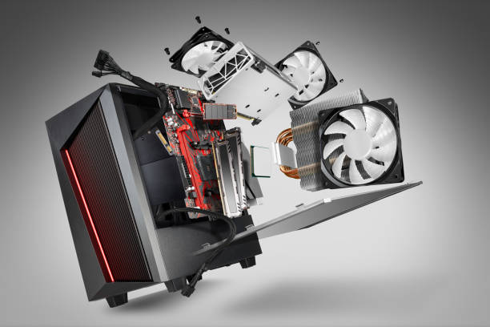
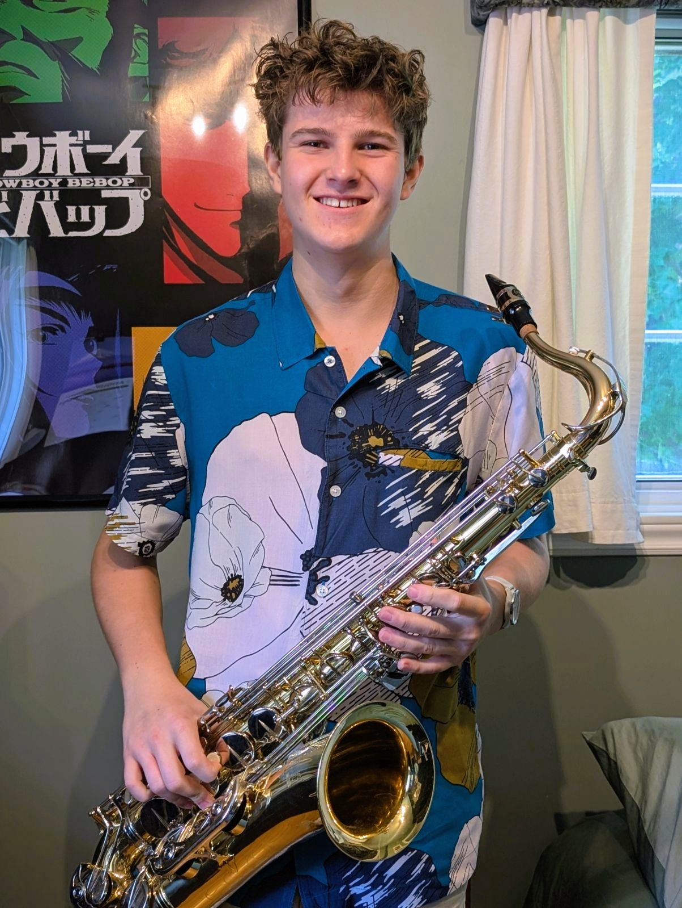

Learning C#, PowerShell, HTML, CSS and many more languages. Passionate about hardware, evolving technologies and AI integration.
Computer Science Student
About Me
HI there, I'm a year 1 computer science student at John Abbott College. I found a passion for computer science when I first looked into building my own computer. From then on, I found myself surrounded by the industry news and highly interested in its evolution. Now, I study the subject every day and am slowly finding more specific interests and developping an advanced skill set.

My Interests and Hobbys
I've always found an interest in how things work. That's what drove me to understand one of humanities most complicated creation: the computer. I want to take my knowledge and apply it to my passion in music, develope new technologies and hardware for the music industry. I want to bring innovation to a constantly evolving industry.

My Work Experience
I have been working for a local, family owned, pool buisness for the past 3 years where we pride ourselves on the connection with our customers and our teamwork and problem solving abilities. This job has shown me the importance of dedication and knowing the ins and outs of your job. There is always more to learn and that just makes me a better worker.